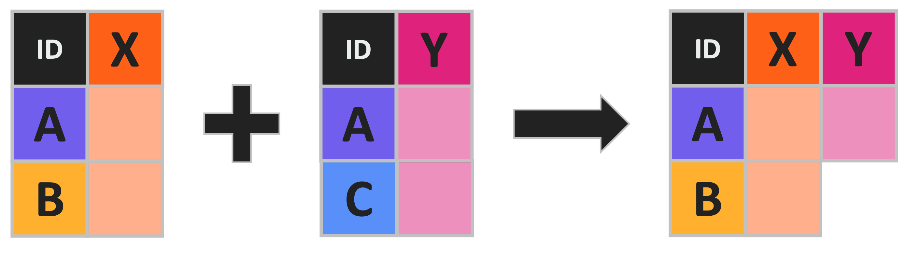
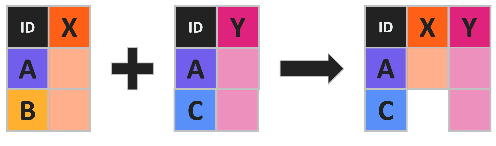
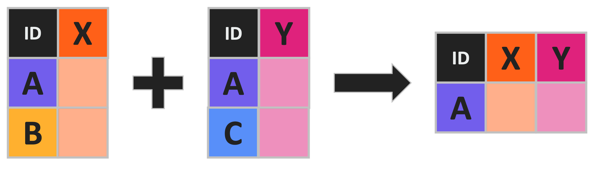
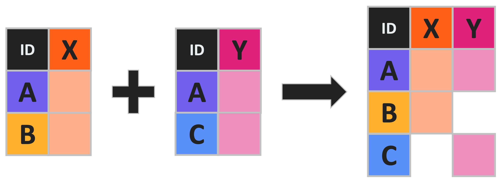
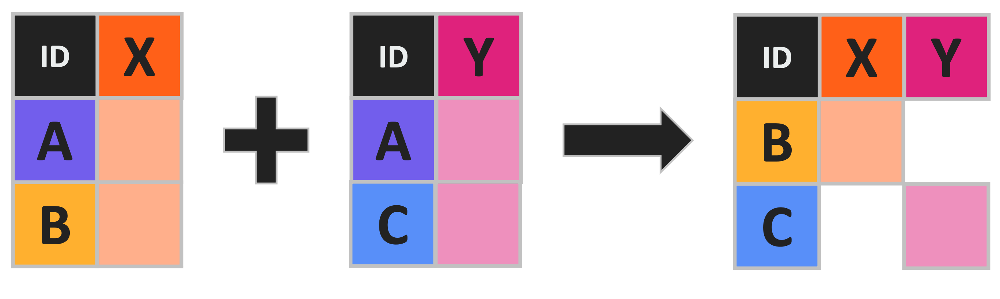

Intro to Data Science
Lecture 4 – Joining Data
A Guide to Your Process
Scheduling
Learning Objectives
Practice
Supporting Information
Class Discussion
Today’s Plan
- Joining Data
- Function Tutorials - Claim Functions!
Today’s Learning Objectives
After today’s session you will be able to:
- Name the four major types of joins
- Contrast / compare the four major types of joins
- Combine data using the four major types of joins
Join Background
- To test a hypothesis we often need to collect multiple types of data
- But, virtually all statistical tools require one data object
- Somehow you need to combine data from multiple sources
- Usually based on the contents of a shared column in both sources
- Matching two data objects like this is called “joining”
Join Example
- You want to test how frogs are affected by rainfall
- You collect the following data:
- number of frogs at ponds
- daily rainfall at those ponds
- Need to join the frog abundance and rain amount data matched by their pond
Join Types
- Four major flavors of join:
- Left / Right Join
- Inner Join
- Outer Join (sometimes also known as “full” or “full outer”)
- Anti Join
Left Joins
- Left joins keep all rows/columns found in “left” dataframe
- Add on columns from “right” dataframe if they have matching rows in “left”

Right Joins
- Right joins keep all rows/columns found in “right” dataframe
- Add on columns from “left” dataframe if they have matching rows in “right”

Join Example Data
- Before we practice our joins, let’s review an example dataset I’ve created for this purpose
- We are studying the effect of human impacts on lichens that grow on trees
- We collected two sets of data to test this hypothesis:
- The distance to the nearest road for 26 trees (“Tree_A” through “Tree_Z”)
- The percent cover of the three major lichen types on 10 of those trees
- Any questions on this study or these example datasets?
Practice: Left Joins

- Download the “tree_lichen.csv” and “tree_road.csv” from the course page
- Load them into R and check their structure
- Remember to use the
read.csvfunction
- Remember to use the
- Use a left join to combine these two dataframes by tree ID
- What is the structure of the resulting dataframe?
Inner Joins
- Inner joins keep columns from both left and right but only rows that are found in both
- Useful when you only want to keep rows with complete data

Outer Joins
- Outer joins keep columns from both left and right and all rows

- This join type is also known as a “full join” or “full outer join”
Revisiting Lichen Data
- You decide to revisit your lichen / tree study
- Now you want to keep the tree road distances whether or not you have lichen cover
- What kind of join should you use? Why?
Practice: Inner/Outer Joins
- Use a full join to combine the original lichen and road distance objects
- What is the structure of the resulting dataframe?
- How does this differ from the result of your left join earlier?
Anti Joins
- Anti joins keep columns from both left and right but only rows that are not found in both

Re-revisiting Lichen Data
- You have just been awarded a grant to conduct more lichen research!
- Congratulations!
- You decide to spend your grant on measuring lichen on all of the trees that you did not measure the first time
- You need to join your old datasets to identify which trees you should measure with your new grant
- What kind of join should you use? Why?
Practice: Anti Joins
- Use an anti join to combine the original lichen and road distance objects
- Which dataframe should be on the “left” and which should be “right”?
- Does it matter?
- How many trees do you need to measure lichen on with your new funding?
Join Trivia - Question 1
- I have a table of scorpion abundance and another of desert temperatures
- I want to keep only scorpion values that also have temperature
- Which type of join should I use?
- Inner join!
- Keeps only rows found in both dataframes
Join Trivia - Question 2
- I have a table of bird species and another of grass species at various plots
- I want to include all birds and grasses regardless of whether both are in each plot
- Which type of join should I use?
- Full join!
- Keeps all rows found in either dataframe
Join Trivia - Question 3
- I have a table of patient response to medication and another of patients who indicated they don’t want their data used
- I want to remove medication response information for all patients who didn’t give consent to use their data
- Which type of join should I use?
- Anti join!
- Keeps only rows not found in both data tables
Temperature Check
How are you Feeling?

Function Tutorial Assignment
- Picking functions today!
- Take a moment and get your 7-10 functions list ready
- You may also want to pull up CRAN (just in case)
- Any lingering questions about this assignment?
- Esp. any that need to be answered before picking functions
Randomizing Vectors
- We’ll use the
samplefunction to randomize student order
samplehas three main arguments:x= vector to randomizesize= number of times to randomly samplereplace= whether vector elements can be retrieved more than once
- In our case:
x= vector of student namessize= number of studentsreplace=FALSE(don’t want to double pick the same student)
Randomizing Vectors Demo
- Let’s look at an example to clarify that
Function Tutorial: Pick Functions
- Using order from
samplewe’ll claim one function each per round:- Round 1: random order
- Round 2: reverse of Round 1 order
- Round 3: new random order
- Claimed functions should be entered in the Google Sheet I made for this
- We’ll go one by one so do not enter functions before your turn!
Function Tutorial: Free Work
- Make a new R Markdown file for this assignment
- Write in your three functions and which package(s) they come from
- Remember to check their help file!
?function_name
- The help file also (sometimes) has examples at the bottom!
- Feel free to adapt these for your tutorial assignment
Temperature Check
How are you Feeling?
Upcoming Due Dates
Due before lab
(By midnight)
- Muddiest Point #4